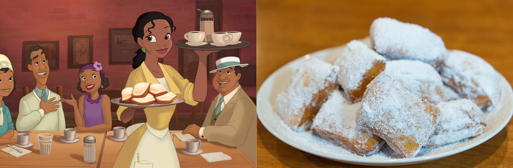
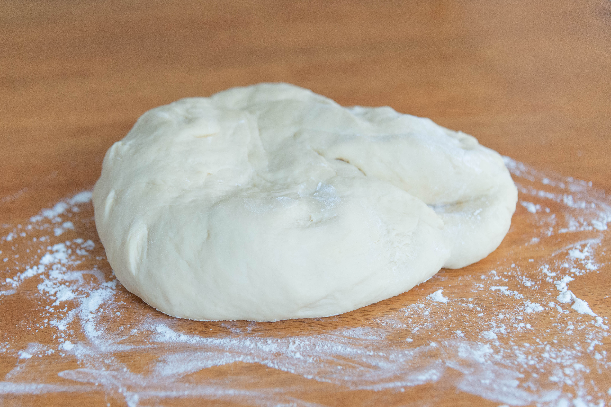
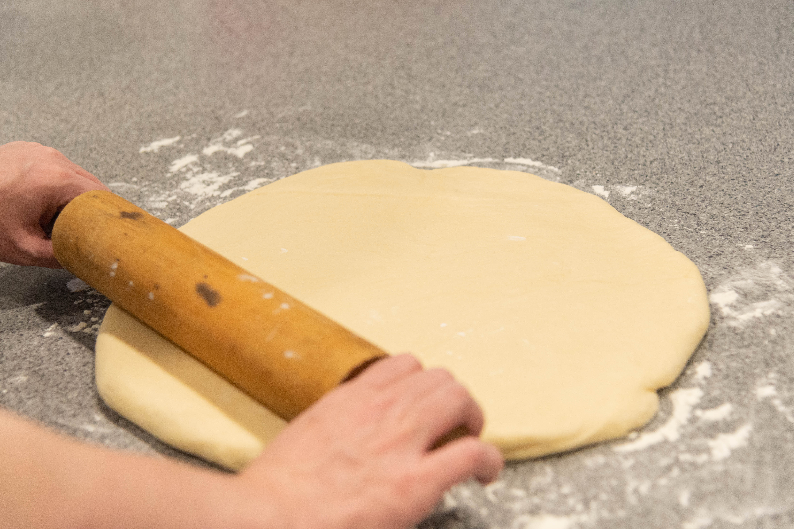
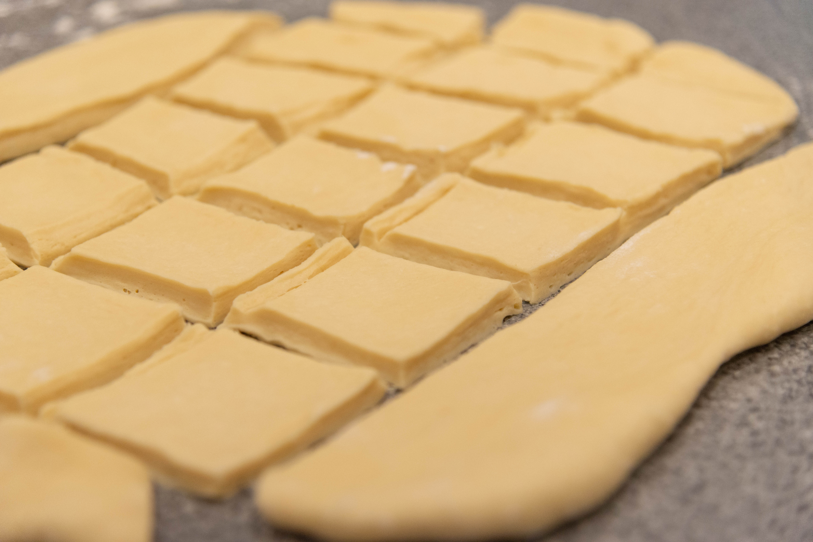
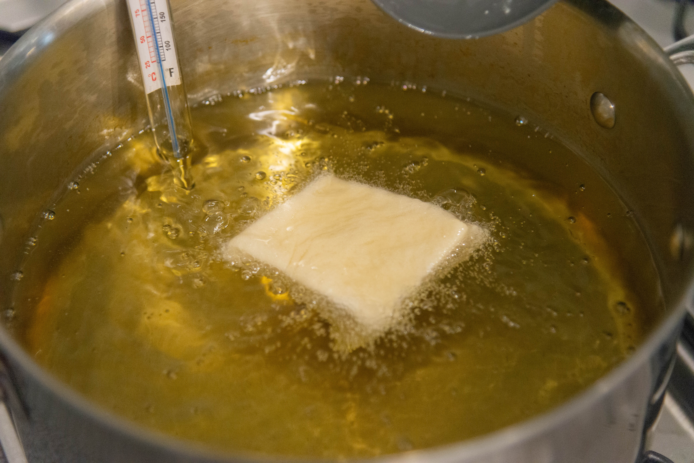
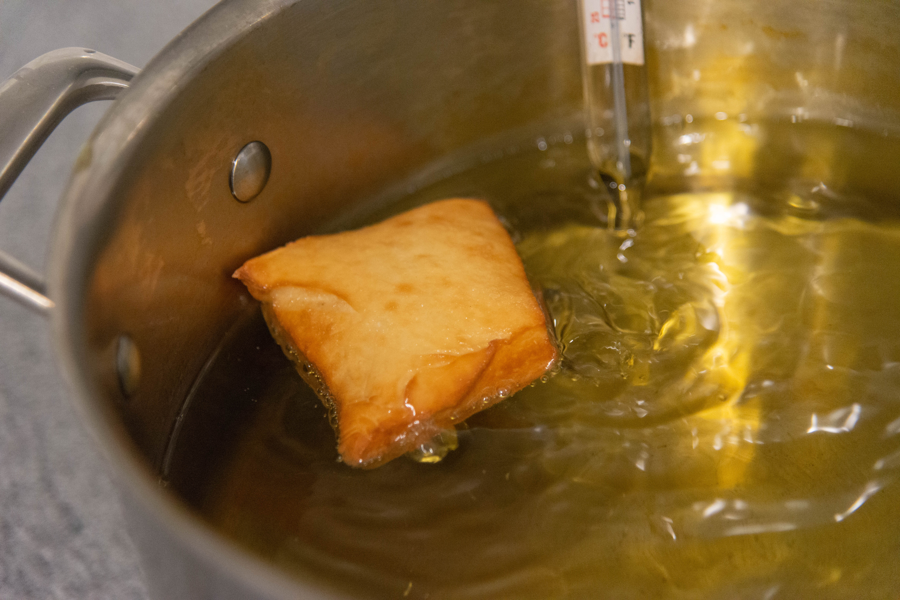
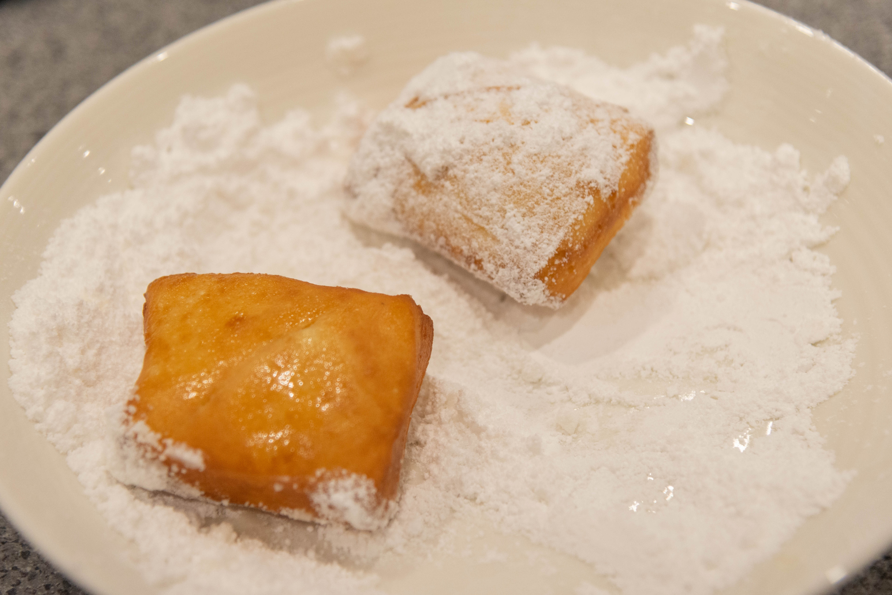

Tiana’s Beignets from The Princess and the Frog

Ingredients
- 2 1/4 tsp active dry yeast
- 1 1/2 cups warm water
- 1/2 cup white sugar
- 1 tsp salt
- 2 large eggs
- 1 cup evaporated milk
- 6 1/2 cups bread flour
- 1/4 cup shortening
- 1 quart vegetable oil for frying
- 1/4 cup confectioners’ sugar
Method
- In a bowl, combine the water, sugar and yeast. Let sit for 10 - 15 minutes.
- Using a standalone mixer, mix the eggs, evaporated milk and salt until fully combined.
- Turn the mixer to low and add the yeast mixture.
- Add half the flour and mix until combined.
- Add the shortening and continue to mix.
- Once combined add the remaining flour and be careful not to over mix.
- Take the dough out of the mixer and knead until smooth.

- Place the dough back into the bowl, cover with plastic wrap and move bowl to a warm area.
- Let dough rise for 2 hours.
- Once the dough has finished rising roll it out to 1/4" thick.

- Slice the dough into 2" squares.

- In a large saucepan, heat the vegetable oil until it reaches a temperature of 160 degrees celsius.
- Place a few dough squares into the oil and allow them to cook.

- Make sure to turn them so they don't burn.

- Once the beignets are done cooking, dust with a layer of icing sugar.

- To serve, pile more icing sugar on top. Best served straight away.